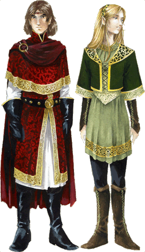
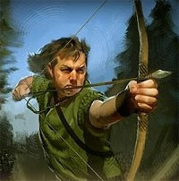

Gli Elfi Alti rappresentano la razza elfica più comune e, sotto certi aspetti, anche quella più mentalmente aperta ed amichevole. Gli Elfi Alti, infatti, sono gli elfi che maggiormente si dedicano a viaggiare nel mondo esterno alle loro terre natali e ad avere contatti con i membri delle altre razze. Sebbene non sia facile divenire amico di un Elfo Alto o del suo popolo, quando ciò avviene si creano amicizie molto forti e destinate a durare nel tempo. Nonostante non manchino eccezioni, la maggioranza dei membri di questa razza è contraddistinta da una personalità incline al bene ed al rispetto della vita. L'incredibile longevità degli elfi Alti ha inciso in modo considerevole sulla storia e sull'evoluzione di questa razza.

Nonostante gli Elfi Alti ricordino gli Umani sotto molti punti di vista, costoro sono contraddistinti da alcune caratteristiche somatiche molto particolari. I lineamenti degli Elfi Alti sono sempre molto regolari corrispondendo ad elevati canoni di bellezza utilizzati dalla razza umana. Infatti, assai raramente utilizzando questi canoni un elfo può essere definito fisicamente brutto. La loro pelle è sempre abbastanza chiara, quasi pallida. Non essendo presente melanina nella loro pelle la loro carnagione resta chiara indipendentemente dall'ammontare di tempo speso dagli stessi al sole. I loro occhi e i loro capelli rientrano, nella stragrande maggioranza dei casi, in due varianti principali. I capelli possono essere biondi o castani, gli occhi possono essere azzurri o verde intenso. Solo una piccola minoranza di elfi ha capelli di colore nero corvino ed occhi neri. Altra caratteristica, universalmente conosciuta, degli Elfi Alti sono le orecchie appuntite nella loro parte superiore. Questa punta solitamente non supera i due o tre centimetri di lunghezza. Infine, un'ulteriore caratteristica somatica degli Elfi Alti è la totale assenza di barba, baffi e di peluria sul loro corpo, ad eccezione di una leggera presenza di peli sotto le ascelle e nelle zone intime. Quanto alla corporatura, gli Elfi Alti sono leggermente più bassi ed esili degli umani superando molto raramente il metro e novanta di altezza. Questa corporatura rende gli Elfi Alti più agili ma meno resistenti degli umani.
|
TABELLA PER IL COLORE DEI CAPELLI E DEGLI OCCHI |
||
| DADO % | COLORE CAPELLI | COLORE OCCHI |
| 1-39 | Biondo | Azzurro Ghiaccio |
| 40-70 | Castano Chiaro | Azzurro Scuro |
| 71-95 | Castano Scuro | Verde Smeraldo |
| 96-100 | Nero Corvino | Nero Pece |


|
MODIFICATORE RAZZIALE ALLE ABILITÀ |
| Bonus di +1 alla Destrezza |
| Penalità di -1 al Costituzione |
|
PUNTEGGI MINIMI E MASSIMI RAZZIALI PER LE ABILITÀ |
||
| ABILITÀ | MINIMO | MASSIMO |
| Forza | 7 | 18 |
| Intelligenza | 8 | 18 |
| Saggezza | 7 | 18 |
| Costituzione | 6 | 17 |
| Carisma | 7 | 18 |
| Destrezza | 8 | 19 |
|
ACCESSO ALLE VARIE CLASSI |
|
| CLASSE | LIVELLO MASSIMO |
| WARRIOR - Fighter | 15° livello |
| WARRIOR - Weapon Master | 13° livello |
| WARRIOR - Defender | 12° livello |
| WARRIOR - Archer | 15° livello |
| WARRIOR - Blademaster | 15° livello |
| WARRIOR - Leafdancer | 15° livello |
| WARRIOR - Custode della Foglia d'Oro | 15° livello |
| MAGE - Wizard | 16° livello |
| MAGE - Sorcerer | 14° livello |
| MAGE - Alchemist | 13° livello |
| MAGE - Arcanologist | 15° livello |
| MAGE - Magister Formulae | 15° livello |
| MAGE - Erudite | 15° livello |
| MAGE - War Mage | 15° livello |
| ROGUE - Thief | 12° livello |
| ROGUE - Cantore di Arelia | 13° livello |
| ROGUE - Acrobat | 12° livello |
| ROGUE - The Hunter | 13° livello |
| ROGUE - The Researcher | 12° livello |
| CLERIC - Arlinir | 15° livello |
| CLERIC - Arlinir - Warpriest | 14° livello |
| CLERIC - Arlinir - Shaman | 14° livello |
|
ACCESSO ALLE CLASSI MULTIPLE |
| WARRIOR/MAGE |
| WARRIOR/ROGUE |
| ROGUE/MAGE |
|
ABILITÀ DEI LADRI |
PUNTEGGIO INIZIALE |
| Pick Pocket | 20 % |
| Open Lock | 5 % |
| Find/Rem. Trap | 5 % |
| Move Silently | 15 % |
| Hide in Shadows | 15 % |
| Detect Noise | 20 % |
| Climb Wall | 55 % |
| Read Languages | 0 % |
| FATTORE MOVIMENTO BASE | 8 esagoni |
| SENTIRE RUMORI | 20 % |
|
DIMENSIONI E PESO |
SISTEMA DI CALCOLO DELL'ALTEZZA E DEL PESO |
| Altezza del maschio | 125 cm. + 3 cm. per punto di costituzione + 2d8 cm. |
| Altezza della femmina | 110 cm. + 3 cm. per punto di costituzione + 2d8 cm. |
| Peso del maschio | 51 kg. + 2 kg. per punto di costituzione + 1d4 kg. |
| Peso della femmina | 41 kg. + 2 kg. per punto di costituzione + 1d4 kg. |
|
CATEGORIA DI ETÀ |
ANNI |
| Starting Age | 75 + 4d6 |
| Childhood | 0 - 74 |
| Adolescence | 75 - 109 |
| Adulthood | 110 - 174 |
| Middle Age* | 175 - 249 |
| Old Age** | 250 - 349 |
| Venerable Age*** | 350 + |
| Maximum Age | 350 + 1d100 + 5d10 |
* Middle Age: I
personaggi di questa categoria di età perdono 1 punto di forza ed 1 punto di
costituzione, acquisiscono però 1 punto di intelligenza ed 1 punto di saggezza
(non potendo, in ogni caso, superare i massimi razziali).
** Old Age: I personaggi di questa categoria di età perdono 2 punti di
destrezza, 2 ulteriori punti di forza ed 1 ulteriore punto di costituzione,
acquisiscono però 1 ulteriore punto di saggezza (non potendo, in ogni caso,
superare i massimi razziali).
*** Venerable Age: I personaggi di questa categoria di età perdono 1
ulteriore punto di destrezza, di forza e di costituzione, acquisiscono però 1
ulteriore punto di intelligenza e di saggezza (non potendo, in ogni caso,
superare i massimi razziali).


| NOME | Infravisione |
| COSTO IN PUNTI CREAZIONE | NESSUNO - ACQUISIZIONE AUTOMATICA |
| REQUISITO PARTICOLARE | NESSUNO |
| DESCRIZIONE |
Gli Elfi Alti
posseggono, oltre alla normale forma di vista, l'infravisione entro
18 metri di raggio.
Perché l’infravisione funzioni occorre che si
al buio lontano da qualsiasi zona illuminata. Se una zona illuminata
si trova entro 30 metri di distanza dal personaggio ed illuminata da
una fonte luminosa capace di illuminare per un raggio di più di 3 metri
l’infravisione non si attiverà. Fonti luminose di minore intensità (come
una candela) impediscono l’attivazione dell'infravisione solo quando il
personaggio si trova all'interno della zona illuminata. Durante la notte
la luce della luna piena e quella della luna maggiore della metà non
permette l'attivazione dell’infravisione, la luce delle stelle e la luce
della luna minore della metà permettono invece l’infravisione. Si noti
che in foreste particolarmente fitte, dove non penetra molta luce, può
attivarsi l’infravisione anche con la luna piena. Gli occhi del
personaggio attivano l’infravisione in modo graduale ed automatico senza
che tale attività degli organi possa essere comandata: |
| NOME | Resistenza Naturale al Sonno ed allo Charm |
| COSTO IN PUNTI CREAZIONE | NESSUNO - ACQUISIZIONE AUTOMATICA |
| REQUISITO PARTICOLARE | NESSUNO |
| DESCRIZIONE |
Gli Elfi Alti hanno una naturale resistenza alle magie ed agli effetti magici di sonno e di charm. Quando un elfo è soggetto ad una magia, od ad un effetto magico, di questo tipo (si pensi, ad esempio, ad incantesimi come Sleep e Slumber) gli stessi hanno una certa percentuale di resistere all'effetto. La percentuale base è pari al 50% alla quale va aggiunto un bonus del 2% per livello di esperienza raggiunto dall'elfo alto. Se la percentuale è tirata con successo l'elfo ignorerà l'effetto magico, altrimenti avrà comunque diritto al regolare tiro salvezza laddove lo stesso sia previsto. |
| NOME | Stasi |
| COSTO IN PUNTI CREAZIONE | NESSUNO - ACQUISIZIONE AUTOMATICA |
| REQUISITO PARTICOLARE | NESSUNO |
| DESCRIZIONE |
Gli Elfi Alti non dormono come le altre creature, ma ottengono il riposo attraverso uno stato fisico chiamato stasi. Ciò, nonostante costoro possano comunque dormire nel modo comune del termine qualora lo desiderino. Quando gli elfi riposano tramite la stasi, rivivono le esperienze migliori e peggiori della propria vita ripercorrendole esattamente come queste erano state vissute senza poter controllare quali esperienze ritornino alla loro mente. Quando, invece, gli elfi dormono nel senso convenzionale del termine, costoro possono sognare a tutti gli effetti. Per tale motivo, gli incantesimi ed i poteri che modificano, manipolano od alterano i sogni delle creature o gli effetti che si applicano alle creature che sognano non possono essere utilizzati sugli elfi che riposano in stasi ma solo su quelli che hanno deciso di dormire in modo regolare. Nonostante la stasi rappresenti fondamentalmente un modo per riposare, questa tecnica di riposo è di grande importanza per gli elfi. Ciò poiché essendo la durata delle loro vita incredibilmente lunga, periodicamente costoro hanno bisogno di rivivere gli eventi trascorsi della loro esistenza, per mantenere integra la loro personalità ed aiutare la loro memoria. Questo non comune metodo di riposare inoltre, spiega la straordinaria resistenza degli elfi agli effetti magici di sonno e di charm. Per entrare in stasi gli elfi devono utilizzare una posizione comoda (affine a quella utilizzabile dagli uomini quando dormono) non potendo costoro entrare in stasi in posizioni scomode od in piedi. Quando gli elfi entrano in stasi, socchiudono gli occhi e rilassano completamente il proprio corpo, continuando però ad essere coscienti di ciò che accade nei loro dintorni. Tuttavia costoro non possono influenzare ciò che li circonda più di quanto un uomo possa influenzare ciò che gli sta attorno durante il sonno. A differenza degli umani, però, essendo gli elfi consapevoli di ciò che accade loro intorno, costoro possono decidere di uscire dalla stasi (svegliandosi) da soli, attraverso un forte atto di volontà. Quando ciò si verifica, l'elfo tornerà cosciente ma resterà, comunque, confuso per un breve lasso di tempo, come accade ad una qualsiasi altra creatura quando questa si sveglia. |
| NOME | Tolleranza alle Variazioni Climatiche |
| COSTO IN PUNTI CREAZIONE | NESSUNO - ACQUISIZIONE AUTOMATICA |
| REQUISITO PARTICOLARE | NESSUNO |
| DESCRIZIONE |
Gli Elfi Alti sono particolarmente resistenti ai cambiamenti climatici ed alle rispettive variazioni di caldo e freddo. Ciò avviene poiché costoro riescono facilmente ad adattarsi ai vari climi della natura. Tra gli 0° ed i 38° gradi celsius, infatti, gli elfi non risentono assolutamente dei cambiamenti dovuti al variare della temperatura. Oltre i 38° e sotto gli 0° però, costoro subiscono gli effetti negativi del clima come chiunque altro, senza ottenere alcun beneficio e necessitando di adeguare il proprio vestiario di conseguenza. |
| NOME | Resistenza alle Malattie |
| COSTO IN PUNTI CREAZIONE | NESSUNO - ACQUISIZIONE AUTOMATICA |
| REQUISITO PARTICOLARE | NESSUNO |
| DESCRIZIONE |
Nonostante la loro bassa costituzione e la loro apparente fragilità, gli Elfi Alti hanno sviluppato nei millenni una notevole resistenza alle malattie comuni. Non tutti gli elfi posseggono la stessa resistenza alle malattie cambiando questa da individuo ad individuo. In termini di gioco, questa resistenza può variare dal 5 al 50% ed ogni personaggio di questa razza potrà tirare, in fase di creazione, 1d10 * 5% per determinare la propria resistenza personale alle malattie comuni. In ogni occasione di contagio, quindi, l'elfo dovrà effettuare il tiro per verificare se ha resistito allo stesso. Se il tiro percentuale ha successo il contagio è automaticamente escluso altrimenti l'elfo avrà comunque diritto al normale tiro salvezza eventualmente previsto per evitarlo. Questa resistenza non si applica alle malattie magiche o di altri piani dimensionali diversi dal Primo Piano Materiale laddove non diversamente specificato. Occorre, infine, notare che esistono alcune rare malattie che colpiscono unicamente gli elfi come e contro le quali il loro fisico non è resistente (Attacco dei Funghi Debilitanti, Debolezza Corporea Acuta, Radice Ventricolare). In questi ultimi casi di contagio gli elfi avranno diritto ad effettuare unicamente il tiro salvezza laddove sia lo stesso previsto. |
| NOME | Affinità con gli Animali |
| COSTO IN PUNTI CREAZIONE | 1 |
| REQUISITO PARTICOLARE | NESSUNO |
| DESCRIZIONE |
Alcuni Elfi Alti
vivendo in simbiosi con la natura delle foreste hanno
sviluppato una particolare propensione nei confronti degli animali. Costoro ricevono il seguente beneficio: |
| NOME | Percezione dei Passaggi Nascosti |
| COSTO IN PUNTI CREAZIONE | 1 |
| REQUISITO PARTICOLARE | NESSUNO |
| DESCRIZIONE |
Alcuni Elfi Alti
hanno sviluppato un particolare senso che permette loro di percepire con
maggiore attenzione la struttura dell'ambiente che li circonda. Questi
elfi, quindi, potranno con maggiore facilità notare nella struttura
dell'ambiente particolarità che sfuggono a membri di altre razze, come
ad esempio una flebile luce o una tenue corrente d'aria che fuoriesce da
una sottile fessura nel muro. Per tale motivo gli elfi che scelgono
questo talento razziale ottengono il seguente beneficio: |
| NOME | Spostarsi Furtivamente nelle Foreste |
| COSTO IN PUNTI CREAZIONE | 1 |
| REQUISITO PARTICOLARE | NESSUNO |
| DESCRIZIONE |
Gli Elfi Alti
vivono in simbiosi con la natura delle foreste al cui interno
costruiscono le proprie dimore e comunità. Alcuni di loro, passando anni
esplorando le foreste, hanno imparato a muoversi al loro interno
silenziosamente e coperti dalle frasche per non essere avvistati. Per tale motivo
costoro ottengono il seguente beneficio: |
| NOME | Tradizione nell'Uso della Spada Lunga |
| COSTO IN PUNTI CREAZIONE | 2 |
| REQUISITO PARTICOLARE | PUNTEGGIO IN DESTREZZA ALMENO PARI A 15 |
| DESCRIZIONE |
La spada lunga
rappresenta l'arma della tradizione elfica per eccellenza. Alcuni Elfi Alti,
quindi, hanno sviluppato una tecnica nell'uso di quest'arma che a fronte
della robustezza fisica utilizza la rapidità e la leggiadria dei
movimenti per effettuare fendenti particolarmente lesivi nei confronti
dei loro avversari. Per tale motivo, gli Elfi Alti che scelgono questo talento razziale ottengono
il seguente beneficio: |
| NOME | Agilità Superiore |
| COSTO IN PUNTI CREAZIONE | 2 |
| REQUISITO PARTICOLARE | PUNTEGGIO IN DESTREZZA ALMENO PARI A 13 |
| DESCRIZIONE |
Gli Elfi Alti
posseggono un fisico particolarmente agile rispetto alle altre razze. In
particolare, alcuni elfi sono nettamente superiori rispetto ai membri
delle altre razze nell'effettuare alcuni tipi di prove di agilità. Per
tale motivo, gli Elfi Alti che scelgono questo talento razziale
ottengono il seguente beneficio: |
| NOME | Movimento Boschivo |
| COSTO IN PUNTI CREAZIONE | 2 |
| REQUISITO PARTICOLARE | NESSUNO |
| DESCRIZIONE |
Gli Elfi Alti
vivono in simbiosi con la natura delle foreste al cui interno
costruiscono le proprie dimore e comunità. Alcuni di loro, passando anni
esplorando le foreste, hanno imparato a muoversi al loro interno con
incredibile agilità e velocità. Per tale motivo costoro ottengono il seguente beneficio: |
| NOME | Inclinazione Magica Naturale |
| COSTO IN PUNTI CREAZIONE | 1 / 2 / 3 / 4 |
| REQUISITO PARTICOLARE |
ACQUISTABILE SOLO DAGLI UTENTI DI MAGIA PUNTEGGIO IN INTELLIGENZA RISPETTIVAMENTE ALMENO PARI A 15 / 16 / 17 / 18 |
| DESCRIZIONE |
La natura magica della
razza elfica aiuta costoro, qualora abbiano intrapreso la carriera
di utenti di magia, ad utilizzare gli incantesimi che hanno studiato.
Per tale motivo, gli Elfi Alti che acquistano questo talento razziale ottengono il seguente beneficio: |
| NOME | Capacità Magiche Naturali |
| COSTO IN PUNTI CREAZIONE | 1 / 2 / 3 |
| REQUISITO PARTICOLARE | PUNTEGGIO IN INTELLIGENZA RISPETTIVAMENTE ALMENO PARI A 13 / 14 / 15 |
| DESCRIZIONE |
La natura magica della razza elfica dona ad alcuni di loro dei poteri magici innati. Questi poteri magici si considerano cantrip a tutti gli effetti e ne seguono pedissequamente le regole di utilizzo (link). Per tale motivo gli Elfi Alti che acquistano questo talento razziale, qualora non appartengano ad una classe di personaggio che utilizza la magia, si considerano automaticamente aver accesso a tale forma minore di magia acquisendo i punti magia previsti nel relativo regolamento, ossia 1 punto magia + 1 ogni tre livelli (1 al 1° e 2° livello, 2 punti dal 3° al 5° livello, 3 punti dal 6° all'8° livello, e così via...). Ciò, indipendentemente dal tiro effettuato in base al regolamento per la conoscenza dei cantrip. Costoro, inoltre, potranno scegliere, a seconda dei punti creazione investiti in questo talento razziale, uno (con 1 punto creazione), due (con 2 punti creazione) o tre (con 3 punti creazione) incantesimi minori speciali a cui hanno accesso unicamente i rappresentanti degli Elfi Alti, selezionandoli dalla seguente lista: Elven Globes of Light (Evocation Radiance) Range: 0 Quando l'elfo utilizza questa magia compaiono nell'aria intorno alla sua persona tre piccoli globi luminosi fluttuanti. I globi, che resteranno fermi per tutta la durata della magia fluttuando e roteando a mezz'aria, illumineranno perfettamente fino ad una distanza di 6 metri di raggio. La luce avrà riflessi azzurri e non sarà particolarmente intensa, non procurando fastidio agli esseri che hanno penalità qualora esposti ad una luce intensa come quella del giorno. Questi globi non saranno in grado di illuminare tenebre create magicamente. Trascorsa un'ora dalla loro evocazione i globi svaniranno nel nulla. Elven Bed of Leaf (Alteration) Range: 3 metri Questa magia può essere utilizzata dagli elfi solo quando si trovano nelle foreste (non può quindi essere utilizzata, ad esempio, all'interno di edifici, grotte, caverne od in ambienti naturali diversi). Quando l'elfo utilizza questa magia le piante ed il fogliame presente sul luogo di lancio si contorcerà, ammasserà e disporrà in modo tale da creare un comodo giaciglio con anche una coperta di foglie in grado di fornire un certo calore. Questo giaciglio permette ad una creatura di taglia massima media di riposare comodamente effettuando anche riposo totale (sempre che disponga di adeguato nutrimento) per 24 ore. Trascorso questo periodo il giaciglio svanirà. Si noti che il giaciglio non permetterà alla creatura di riposare comodamente in presenza di condizioni atmosferiche avverse (si pensi a temporali od a tempeste) od in condizioni climatiche particolarmente rigide (ossia sotto i 0° centigradi) essendo richiesto in questi casi che il personaggio ponga in essere ulteriori misure atte a garantirgli un'adeguata copertura e/o un sufficiente calore. Elven Lesser Sedative (Conjuration) Range: Tocco Attraverso questa
magia l'elfo alto richiama ad esistenza un sedativo naturale sull'arma
od il proiettile da taglio o da punta che tocca. Questo sedativo si
considera a tutti gli effetti un veleno di origine naturale e per il suo
utilizzo dovranno essere seguite le normali regole per i veleni (link)
ad eccezione della prova richiesta per spalmare il veleno sull'arma o
sul proiettile (che non è richiesta), della regola relativa alle dosi
necessarie ad avvelenare l'arma ed, ovviamente, delle regole relative
alla durata del suo avvelenamento. Il veleno resterà sull'arma (o sul
proiettile) fino a che con la stessa (o con lo stesso) non sarà colpita
una qualsiasi creatura ed, in ogni caso, svanirà una volta trascorsi 10
rounds dalla sua creazione. Le caratteristiche del veleno sono le
seguenti: |
| NOME | Agilità in Combattimento |
| COSTO IN PUNTI CREAZIONE | 3 |
| REQUISITO PARTICOLARE | PUNTEGGIO IN DESTREZZA ALMENO PARI A 13 |
| DESCRIZIONE |
Alcuni Elfi Alti danno
il meglio di loro durante i combattimenti quando sfruttano tecniche
basate sull'agilità dei loro movimenti. Per tale motivo, gli Elfi Alti
che possiedono questo talento razziale ricevono i seguenti benefici: |
| NOME | Maestria nell'Arco |
| COSTO IN PUNTI CREAZIONE | 3 |
| REQUISITO PARTICOLARE | PUNTEGGIO IN DESTREZZA ALMENO PARI A 13 |
|
DESCRIZIONE
 |
Gli Elfi Alti
detengono una secolare tradizione nella costruzione degli archi e nel
loro utilizzo in combattimento. Per tale motivo, gli Elfi Alti che
possiedono questo talento razziale ricevono i seguenti benefici: |
| NOME | Campione nell'Uso degli Archi |
| COSTO IN PUNTI CREAZIONE | 3 + 5% malus punti esperienza |
| REQUISITO PARTICOLARE | NESSUNO |
| DESCRIZIONE |
Alcuni Elfi Alti hanno
trascorso la loro lunga gioventù allenandosi nell'uso degli archi.
L'arco, infatti, rappresenta l'arma da tiro per eccellenza utilizzata
dal popolo elfico. Per questo incredibile addestramento questi Elfi Alti
ottengono il seguente beneficio: |
| NOME | Campione nell'Uso delle Lame |
| COSTO IN PUNTI CREAZIONE | 3 + 5% malus punti esperienza |
| REQUISITO PARTICOLARE | NESSUNO |
| DESCRIZIONE |
Alcuni Elfi Alti hanno
trascorso la loro lunga gioventù allenandosi nell'uso delle spade
tradizionalmente utilizzate dal loro popolo. Per questo incredibile
addestramento questi Elfi Alti ottengono il seguente beneficio: |
| NOME | Spada Magica del Popolo Elfico | ||||||||||||||||||||||||||||||||||||||||||
| COSTO IN PUNTI CREAZIONE | Variabile | ||||||||||||||||||||||||||||||||||||||||||
| REQUISITO PARTICOLARE | NESSUNO | ||||||||||||||||||||||||||||||||||||||||||
| DESCRIZIONE |
Gli
Elfi Alti
conservano per generazioni le spade lunghe incantate dal loro popolo che
costituiscono veri e propri cimeli dei loro clan. Per tale motivo, gli
Elfi Alti che scelgono questo talento
generale ottengono il seguente beneficio:
|